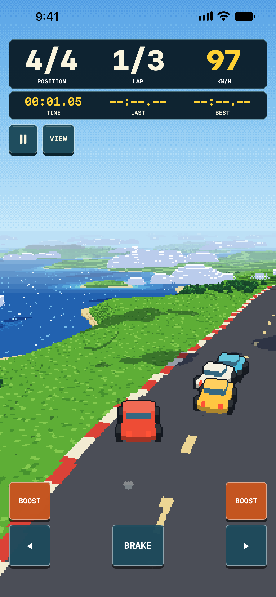
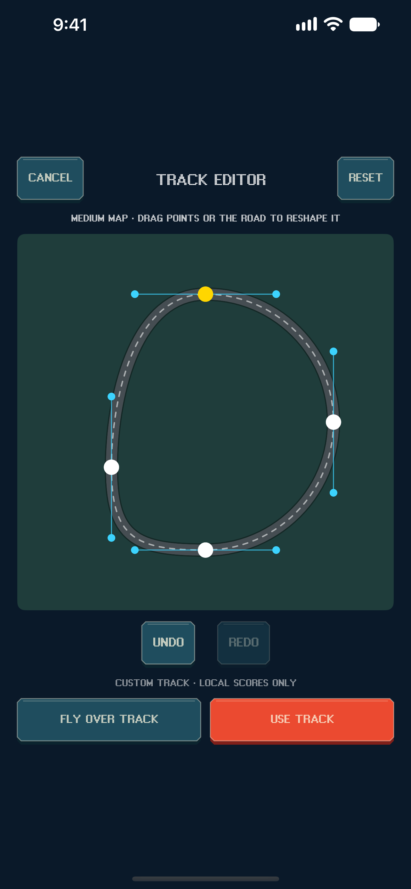
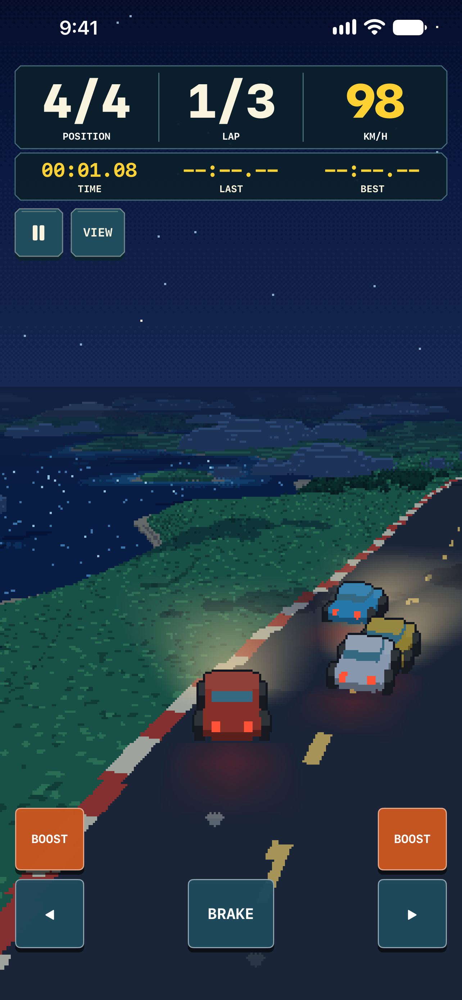

RACE YOUR WAYВЫБЕРИТЕ ВИД
Chase, cockpit or top-down. Switch cameras as you find your rhythm.Сзади, из кабины или сверху. Меняйте камеру по ходу заезда.
RETRO ARCADE RACINGАРКАДНЫЕ ГОНКИ В РЕТРОСТИЛЕ
Three rivals. An island full of turns. And a track editor that puts the next race in your hands.Три соперника, остров с крутыми поворотами и редактор трасс, в котором следующую гонку придумываете вы.

01THE RACEГОНКА
Choose your line, watch the road and save your boost for the moment that counts. Three computer-controlled rivals have the same finish in mind.Ищите свою траекторию, следите за дорогой и берегите ускорение для нужного момента. Три компьютерных соперника тоже едут к финишу.
Chase, cockpit or top-down. Switch cameras as you find your rhythm.Сзади, из кабины или сверху. Меняйте камеру по ходу заезда.
Boost is limited. Use it to make a move, then brake for the bend.Запас ускорения ограничен. Используйте его для обгона и тормозите перед поворотом.
Keep local high scores and optionally share classic-track results with Game Center.Сохраняйте рекорды на устройстве и при желании отправляйте результаты классической трассы в Game Center.

TRACK EDITOR / 0202THE TRACK EDITORРЕДАКТОР ТРАСС
Bend the road into something new. Drag its curves and control points, choose one of three map sizes, and take your creation for a spin.Придумайте свою дорогу: меняйте кривые и контрольные точки, выбирайте один из трёх размеров карты и отправляйтесь на первый круг.
Track files include this device’s local best scores when available. Custom tracks use local scores.В файл трассы попадают локальные рекорды этого устройства, если они есть. Для пользовательских трасс используются локальные результаты.
03DAY & NIGHTДЕНЬ И НОЧЬ
The sun goes down when your device switches to Dark Mode. Follow the headlights, find the next turn and keep racing under the stars.Когда устройство переходит на тёмную тему, над островом наступает ночь. Следуйте за светом фар и ищите следующий поворот под звёздами.

THE ISLAND AFTER DARK / 03READY FOR YOUR NEXT RUN?ГОТОВЫ К НОВОМУ ЗАЕЗДУ?
COMING TO IPHONE & IPADСКОРО НА IPHONE И IPAD
Game interface is in English.Интерфейс игры — на английском языке.